AVENGERLAND NEWS ARCHIVE 2015
2015
17th December - More
SHIRLEY'S WORLD: Follow That Rickshaw
locations found by Paul
Stroud.
Kingston Street, Hong Kong
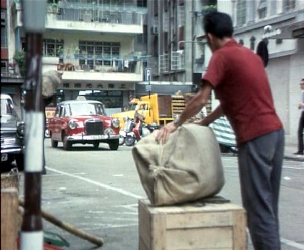
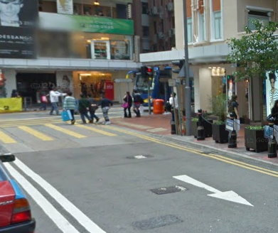
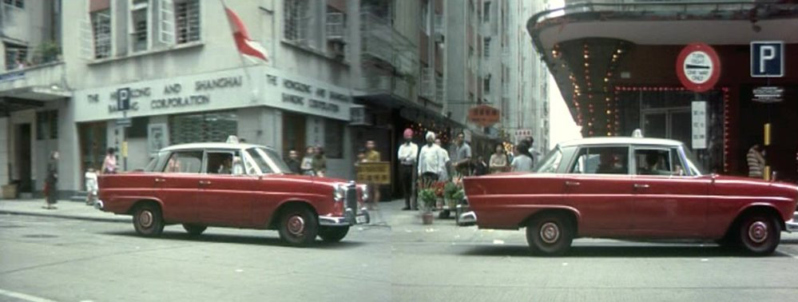

15th December - More
Hong Kong finds from Paul
Stroud.
SHIRLEY'S WORLD: Follow That Rickshaw
Magazine Gap Road, Hong Kong


Magazine Gap Road, Hong Kong

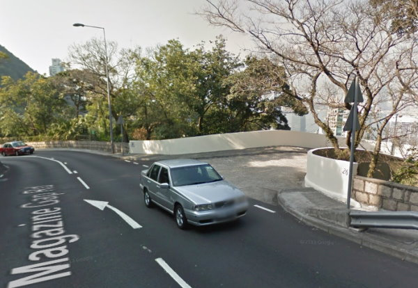
Magazine Gap Road, Hong Kong

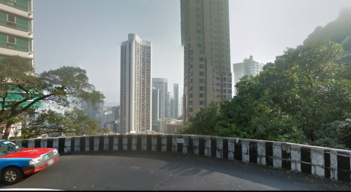
The departure for the Sea Palace
floating restaurant is at Shum Wan Pier Drive
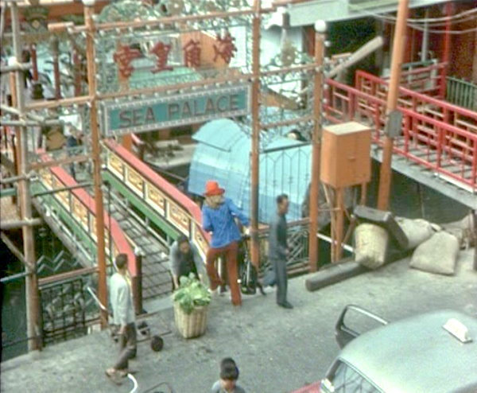


Shek Kip Mei estate, Kowloon - (22º
20' 3.34" N, 114º 10' 7.72" E) the whole area has been redeveloped.
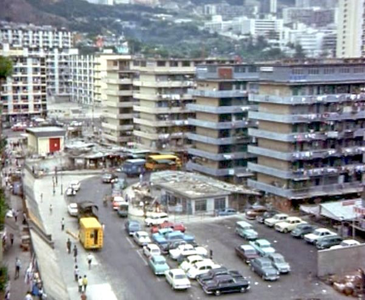


12th December - Modern
Hong Kong is a very difficult place for location spotting so well done Paul Stroud for
finding these SHERLEY'S WORLD
locations.
SHIRLEY'S WORLD: Follow That Rickshaw
Ap Lei Chau (aka Aberdeen
Island) looking towards Aberdeen, Hong Kong - The
tiered structure in the middle is actually a cemetery.
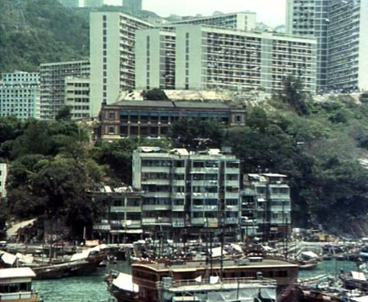
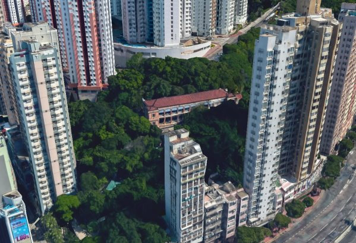
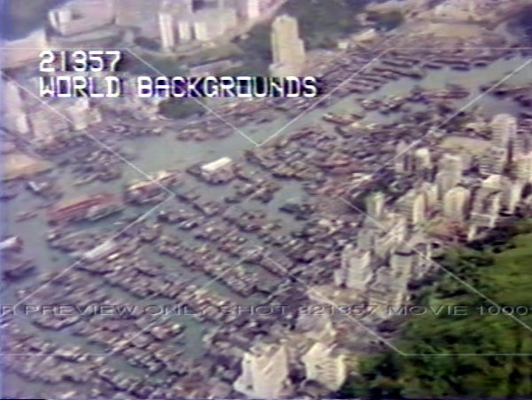
Hennessy Road, Hong Kong
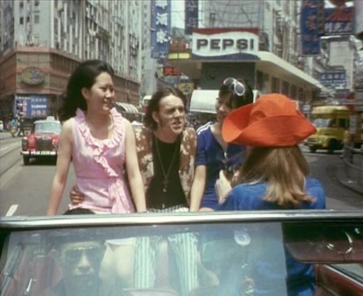
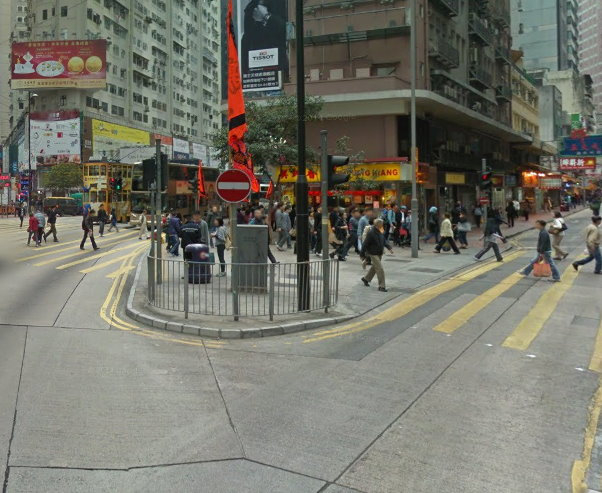
Turning off Johnston Road
into Thomson Road, Hong Kong

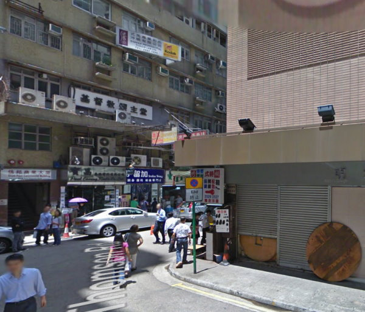

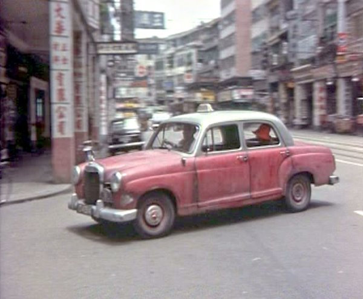

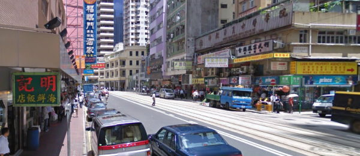
Great George Street, Hong Kong
- The Jade Cinema is now the Casueway Bay Cinema.
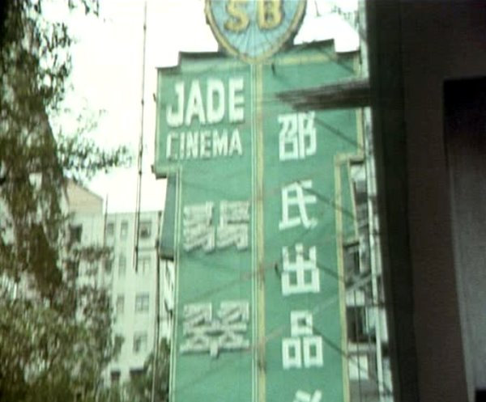
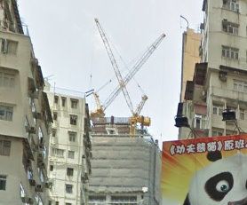


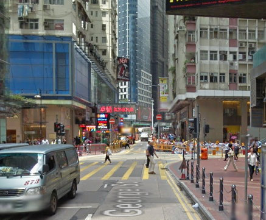
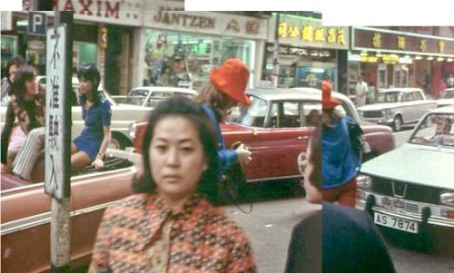
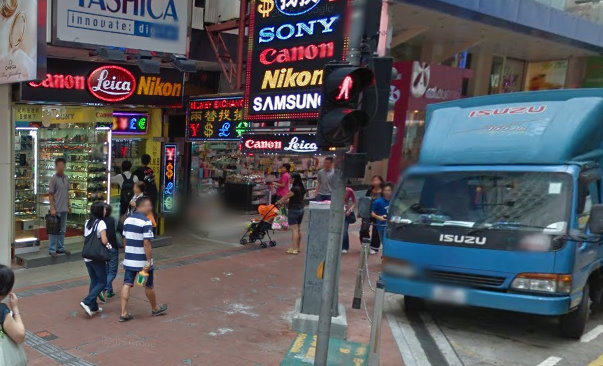
Great
George Street, on to Paterson Street, Hong Kong -
redeveloped as a pedestrain precinct
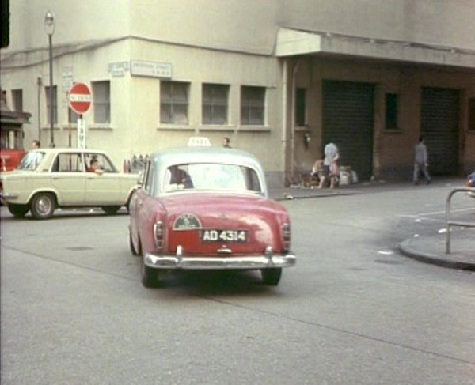
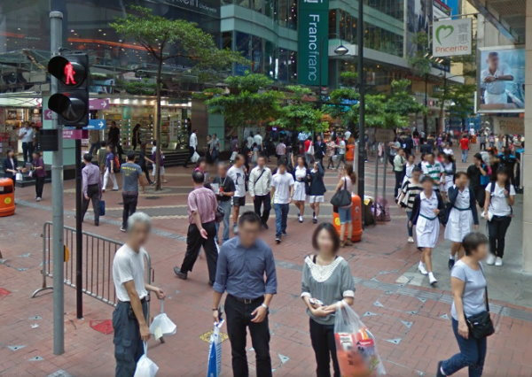
4th December - I nice London find
from Tamara Cartwright-Loebl,
H.
G. WELLS'
INVISIBLE MAN: Flight Into Darkness (Peter Maxwell: 1959)
Cromwell Road
SW7, approaching the right turn for Queens Gate
Gardens, SW7 - The Invisible Man drives to
Harrow Lane with Pat Stevens in his Austin Healey.

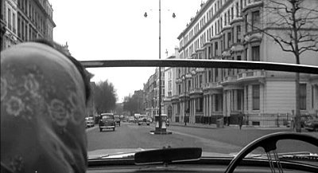
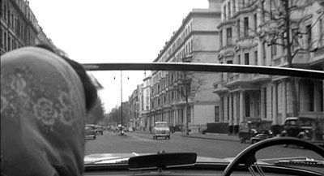
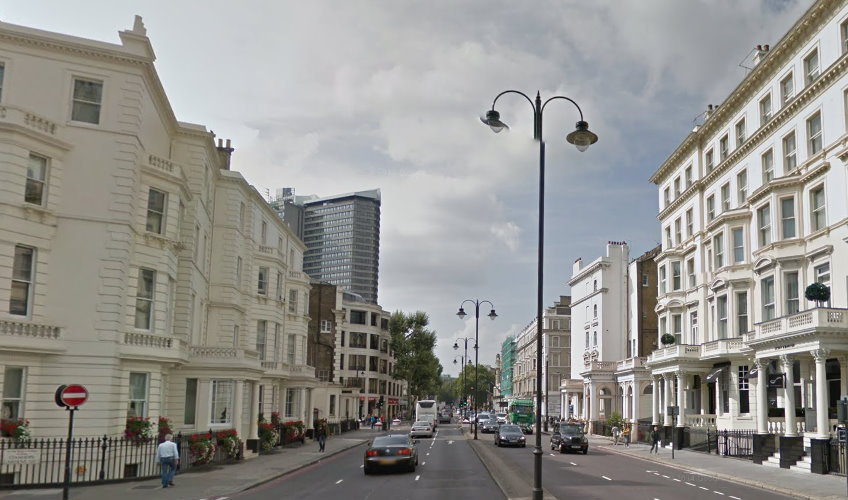
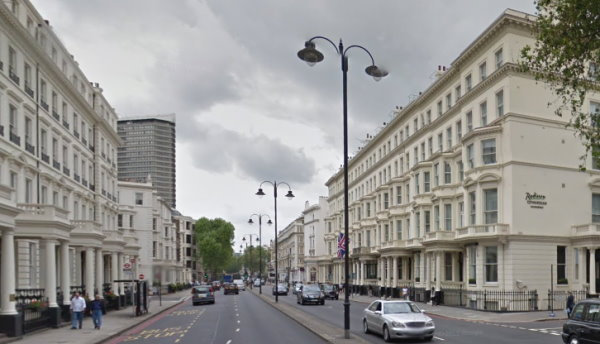
26th
June - Some more astute observation from Paul Stroud.
THE BARON: Long Ago and far Away
(Robert Asher: March 1966)
Theme Building, Center Way, Los Angeles Airport, USA - Establishing Los
Angeles Airport
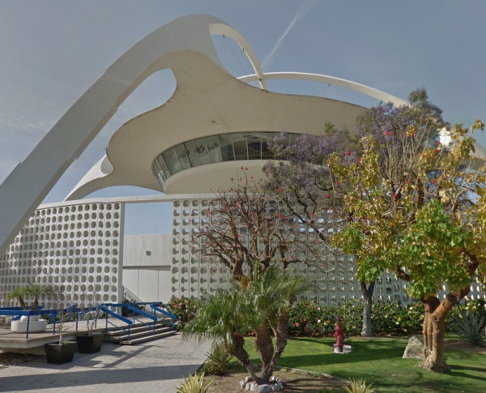
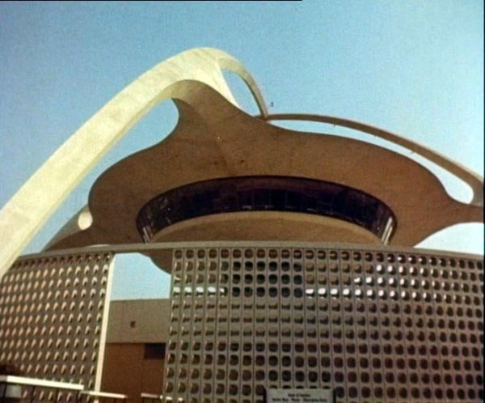
THE BARON: Long Ago and far Away
(Robert Asher: March 1966)
Pacific Coast Highway/W. Century Blvd, Los Angeles, USA - Establishing
Los Angeles
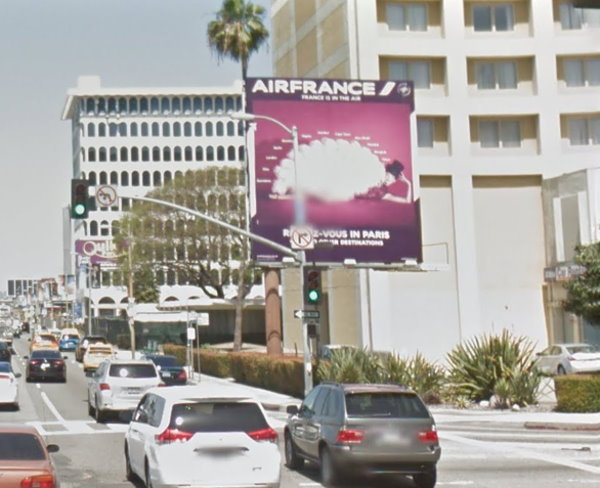

THE BARON: Long Ago and far Away
(Robert Asher: March 1966)
Statler Hotel, Wilshire Boulevard, Los Angeles, USA - Establishing Los
Angeles
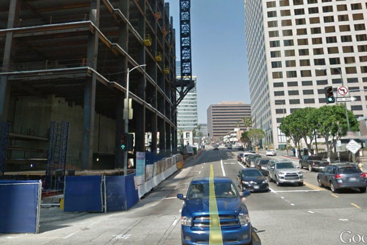
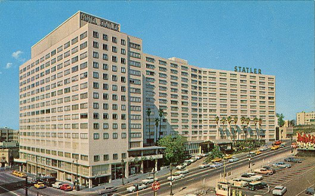

THE BARON: Long Ago and far Away
(Robert Asher: March 1966)
R5:
Nan-Clark's Lane, Highwood Hill - (Highwood Park
House)
John Mannering arrives at the villa of Ramon Petrarca looking for Petrarca and Cordelia.
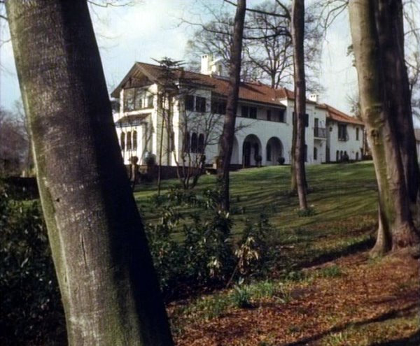
SHIRLEY'S WORLD: Thou Shalt Not be
Found Out (1971)
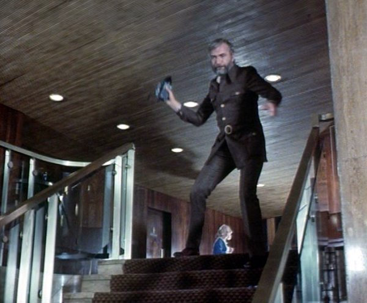
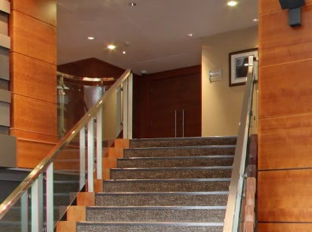
18th June - Some
locations française de Paul
Stroud.
THE BARON: The Edge of Fear
(Quentin Lawrence: May 1966)
Cathédrale
Notre-Dame de Paris, France - Establishing shot of Paris
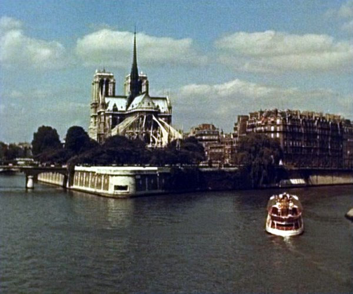
THE BARON: The Edge of Fear
(Quentin Lawrence: May 1966)
Boulevard
de Clichy, Paris, France - Colbert's hotel (76 Boulevard de
Clichy)
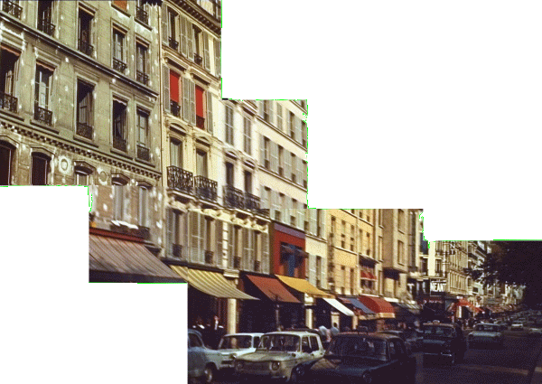
16th
June - Paul
Stroud
GIDEON'S WAY: The Millionaire's Daughter
(Cyril Frankel: April 1965)
Royal
Academy of Arts, Piccadilly, W1 - Alan Blake and Nina
Henderson are visiting London's art galleries
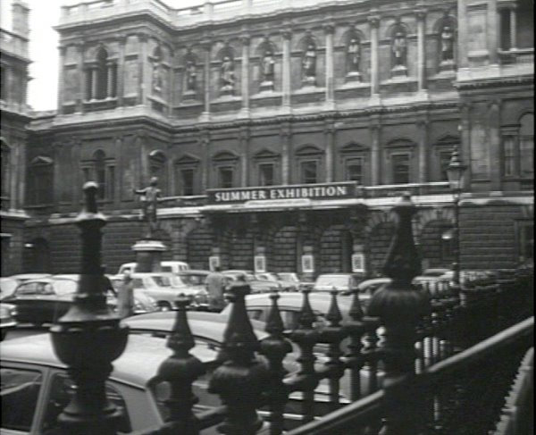
A correction -
GIDEON'S WAY: The Millionaire's Daughter
(Cyril Frankel: April 1965)
Grosvenor
Square, London W1 - American courting couple, Alan Blake and
Nina Henderson, visit F.D.Roosevelt's statue.
This was listed under Parliament Square and Churchill's statue.
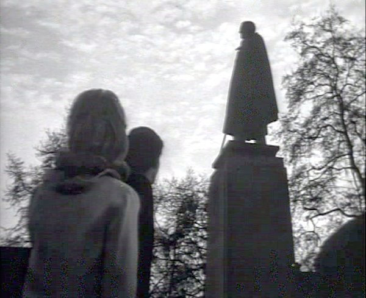
10th
June - Paul
Stroud - There are a few overseas establishing shots in
this one that haven’t been listed.
THE BARON: Night of the Hunter
(Roy Baker: July 1966)
Syntagma
Square, Athens, Greece - Mannering and Cordelia go out for an
evening meal.
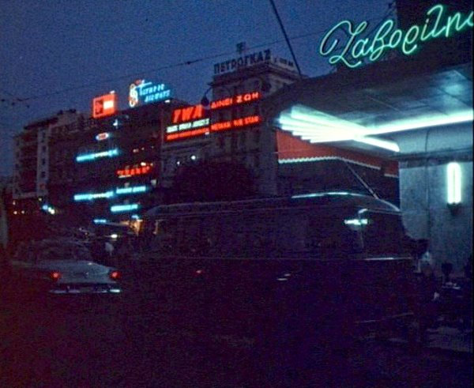
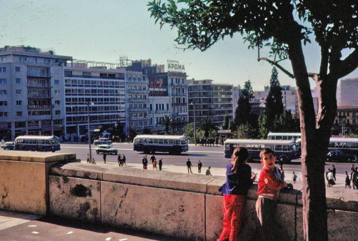
THE BARON: Night of the Hunter
(Roy Baker: July 1966)
Temple
of Apollo, Bassae, Greece - Mannering has arranged to meet an
emissary from Madame Nicharos at the Temple of Mitras.
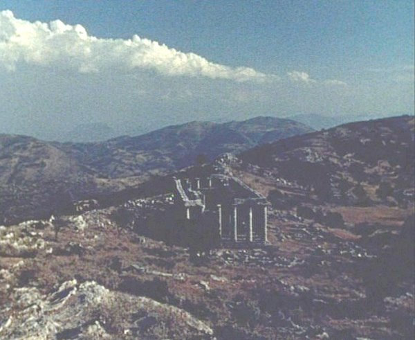
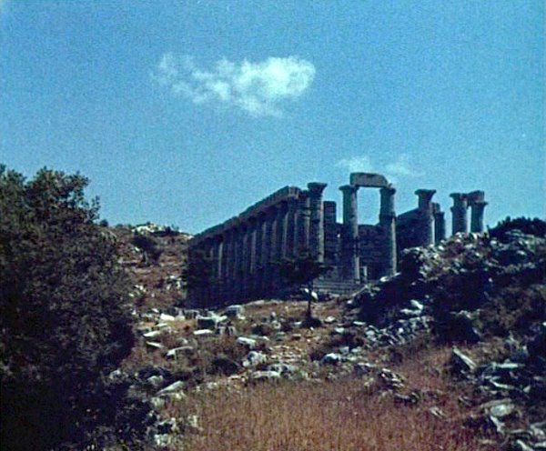
THE BARON: Night of the Hunter
(Roy Baker: July 1966)
Hotel
Hassler Roma, Piazza Trinità dei Monti, Rome - Entrance to
Mannering’s hotel
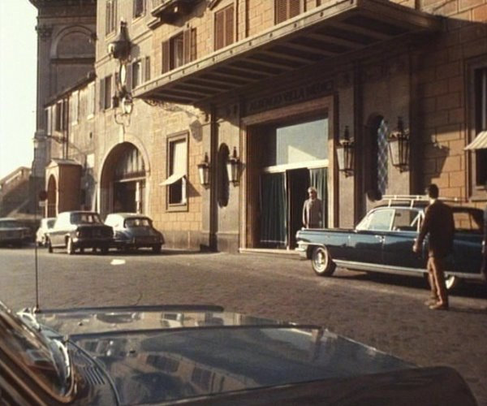
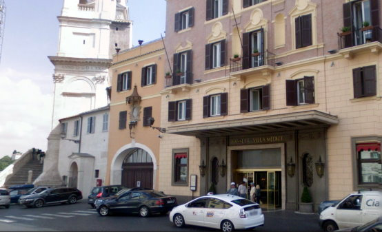
THE BARON: Roundabout
(Robert Tronson: August 1966)
Hotel
Hassler Roma, Piazza Trinità dei Monti, Rome
- Samantha Ballard
and John Mannering discuss their plans in Mannering's hotel.
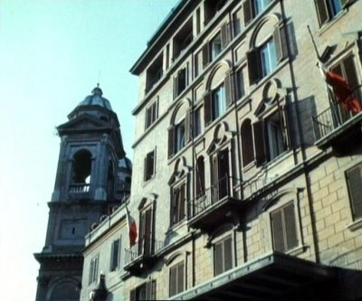
Other familiar locations in this episode:
THE BARON: Roundabout
(Robert Tronson: August 1966)
Naples,
Italy - Mannering and Cordelia arrive at hotel (former Odeon
Cinema in Piazza Piedigrotta)


THE BARON: Roundabout
(Robert Tronson: August 1966)
Ormonia
Square, Athens - Mannering and Cordelia go out for an evening
meal.
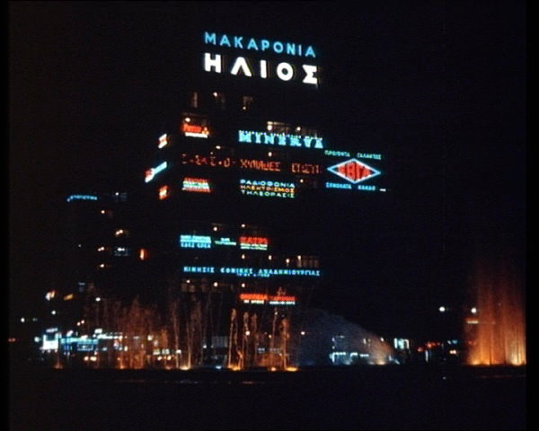
THE BARON: Roundabout
(Robert Tronson: August 1966)
Hotel
Nixe Palace, Avenida Joan Miró, Palma de Mallorca - Cordelia
is alone in the hotel

THE BARON: Roundabout
(Robert Tronson: August 1966)
Saint-Paul-de-Vence,
France - Madame Nicharos’ hideout
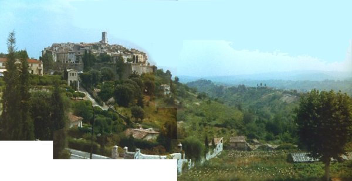
THE
BARON: Roundabout (Robert Tronson: August 1966)
Frensham
Ponds, Surrey -
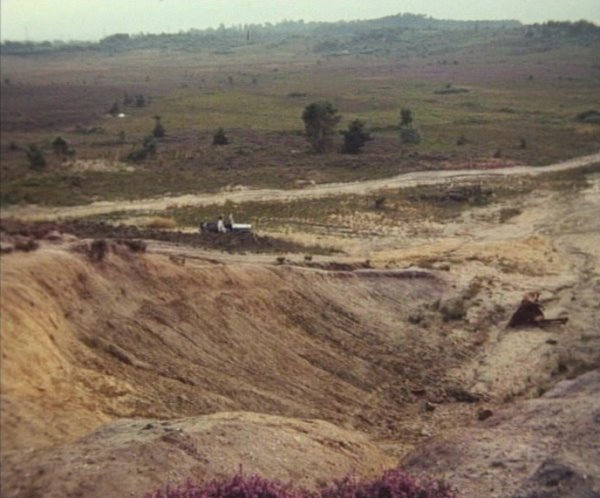
THE BARON: Roundabout
(Robert Tronson: August 1966)
Unknown -

THE BARON: Roundabout
(Robert Tronson: August 1966)
Unknown -
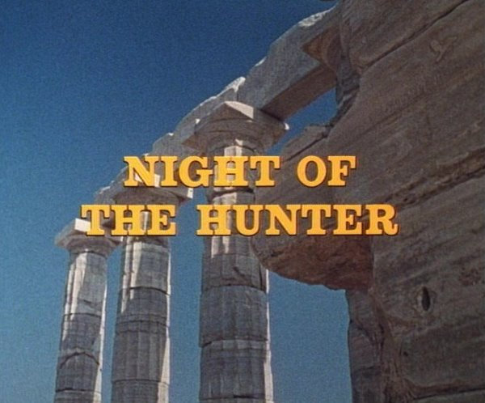
9th
June - Yet another old chestnut knocked off the
tree by Paul Stroud.
DEPARTMENT S: Les Fleurs du Mal (Cyril
Frankel: Early 1969)
Piazza Municipio, Naples, Italy
- Rome, Italy, September 26th. Stacey rushes to Jonny’s apartment in
Rome with news that ‘the brothers’ have arrived in town.
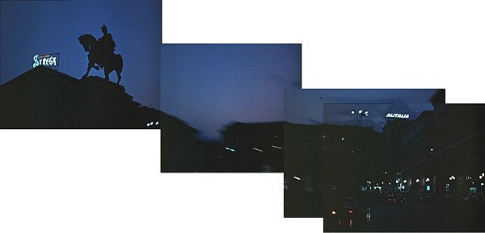
8th June - Another nice
suprise. Steve
Cann found this location from The Human League - Don't You Want Me only to discover
it was a well known Avengerland location. Steve also sent in some
excellent comparison shots.
H25:
Ford, Hawkswood Lane, Fulmer - The
Human League - Don't
You Want Me (1981)


4th June - Geoff Sockett
has been kind enough to send in some more excellent 'now' shots of
Paris.
Archives Nationales, 60
rue des Francs-Bourgeois, Paris, France from THE NEW AVENGERS: K is for Kill Part 2 -
Tiger by the Tail
Commissariat de Police, 22 Rue Condé, Paris, France from DANGER MAN: Have A Glass Of Wine and
THE SAINT: The Spanish Cow.

3rd June - Another unexpected find
of a demolished location. Thankfully Stephen Winterbottom
remembered seeing this location from the top of his bus from the bus
stop opposite. All that remains of 'The Butlers and
Gentleman’s Gentleman Association' is the name of the road that runs
through the site "Campions Close'.
THE AVENGERS: What the Butler Saw
(Bill Bain: December 1965)
N60:
Campions House, Green Street
- Mrs Peel takes Steed to the headquarters of the Butlers and
Gentleman’s Gentleman Association.Arthur de Crecy (Michael Goodliffe)
arrives with Anne Fenwick (Frances Bennett) at his 'cottage in the
country' in his Peugeot. They leave the car and enter the house. Later
Arthur is forced to drive Jeff Randall to the house.
(Identified by Stephen Winterbottom, June 2015)

Stephen also identified this shot from Epic;
"The cameraman has pointed back from where the taxi came down to the
junction. Probably standing uphill from the bus stop."
THE AVENGERS: Epic (James Hill: February 1967)
Cowley
Hill - Mrs. Peel is tricked into using a taxi driven by a disguised
Stewart Kirby's. Mrs Peel soon realises that they are going the wrong
way, but when she protests she is rendered unconscious by gas fed into
her sealed compartment.
(Identified by Stephen Winterbottom, June 2015)
3rd June - Geoff Sockett
has a good eye for these things as he managed to get this excellent
comparison shot of the this scene from THE
PROTECTORS: Disappearing Trick where others had failed.
This is a narrow street next to the Consulat Restaurant in Montmartre,
rue des Saules.
THE PROTECTORS:
Disappearing Trick (Jeremy Summers: Summer 1971)
rue des Saules, Montmartre,
paris, France - Harry (Robert Vaughn) and The
Contessa (Nyree Dawn Porter) continue the discussion on professionalism.
28th May - Another stroke of genus
from Paul Stroud
who has spotted this location from THE
BARON
despite it being dark and the original building having been demolished.
Despite The Beatles connection there are suprisingly few photos that
show all the building from this angle.
THE BARON: The High Terrace
(Robert Asher: September 1966)
EMI
House (redeveloped), Manchester Square, London W1 - Cordelia
arrives by taxi at Phyllis Thornton's apartment.
21st May - Paul Stroud
THE BARON: You Can't Win Them All
(Don Chaffey: March 1966)
Whitehall,
SW1 - Mannering drives his Jensen to Waterloo Station to meet
Cordelia and open a safe deposit box.
THE BARON: You Can't Win Them All
(Don Chaffey: March 1966)
Lees
Place, W1
- Two of Seftan Folkard's heavies arrive at The Peerage Club with
Ronnie Osborne (John Cater) wrapped up inside a carpet and enter the
club. Later, after escaping from the club, but being chased by
Folkard's heavies, Osborne sees a Policeman and offers to confess to
all his crimes if he can see The Baron.
20th
May - Very many thanks to Mike Serby who has
sent in a location a lot of people have spent many hours
looking for, Crawley’s factory in The
Fear Merchants. Mike recognised the location as he worked
for thee engineering company based there.
The bad news is that the building has been demolished, but there are
still images on BingMaps.
THE AVENGERS: The Fear Merchants
(Gordon Flemyng: September 1966)
H76:
Ridgeway Trading Estate, The Ridgeway, Thorney Lane, Iver
- Steed goes to interview Crawley at his ceramics factory. Steed
(Patrick Macnee) escorts Crawley (Andrew Keir) to his Rolls Royce and
watches him drive off. He then notices Crawley’s chaffer on the ground
unconscious. Steed jumps into his Bentley and gives chase.
(Identified by Mike Serby, May 2015)


20th December, 2014 - An
historic find from Geoff
Dodd, this is Jason's Parisian apartment from JASON KING.
JASON
KING: Jason's apartment in Paris
1- 12
Campden Hill Court, Observatory Gardens, London,W8 -
Jason's Parisian appartment
(Identified by Geoff Dodd, December 2014)


9th
March - Geoff Dodd has been doing some detailed JASON KING location
spotting.
JASON KING: A Page Before Dying
()
Hotel Zoo, Kurfürstendamm, Berlin - (also seen as Harry Palmer's hotel
in Funeral In Berlin)

JASON KING: All That Glisters
(Part One) ()
Hollywood Palladium, 6215 Sunset Boulevard, Hollywood, California, USA
- :

JASON KING: Toki (Jeremy
Summers: 1971)
Rue de Vignon/Rue de Seze, Paris, France - The front has been
refurbished so the sign is now completely different.

JASON KING: Buried In The Cold, Cold
Ground ()
rue Grande near the junction with Rue Des Bois, Fontainebleau, France -


rue Grande junction with Rue Marrier, Fontainebleau, France -
13th
May - Some marvelous detective work from Geoff Sockett. Geoff
originally spotted the Gancel Boutet and Caudroy sign in the background
of the NEW AVENGERS
sequence.He found an image of the factory before it was demolished in
the film THE BLACK WINDMILL
(1974). He then went and found that the tree seen in THE NEW AVENGERS shot still
exists. Brilliant stuff!
Gencel, Boutet and
Caudroy (redeveloped), Pirogues de Bercy St, Paris, Île-de-France
- Stanislav (Charles Millot) watches the warehouse where Turkov
(Maxence Mailfort) awakes and is nearly caught by Purdey(Joanna Lumley)
and
Gambit (Gareth Hunt) when they arrive by taxi.
12th May - A few minor corrections
sent in by Steve
Winterbottom who live at location J1.
"J1 is actually Shenleybury Cottages. It was where I lived. It was
locally known as "the Square" but was really Shenleybury
Cottages." Shenleybury Square is what it was called in
the INSPECTOR MORSE
paperwork from the Central production office. Steve also went
on to say that he watched the filming of TO THE DEVIL A DAUGHTER. at J2:
Shenleybury Church.
7th May - Paul Stroud
has sent in a nice selection of finds from Barcelona, Spain. for THE BARON episode Time To Kill. Paul
has also added some links to the Kino Library on Youtube
which
contans a film archiive including nice copies of World Backgrounds
favourites.
THE BARON: Time To Kill
(Jeremy Summers: May 1966)
Plaça del Portal de la Pau - Episode
title

Avinguda Diagonal
- Starring...
Looking along Passeig
de Gràcia fron the junction with Gran Via de les Corts
Catalanes - Screenplay... (see Kino
Library on Youtube)

Hotel Presidente, Avinguda
Diagonal - Mannering's hotel (see Kino
Library on YouTube)
Carrer de Muntaner
- Taxi is being driven to the Hotel Presidente and
stops outside the main door.


7th May - Another
unexpected find by Geoff
Dodd, a sequence we didn't even have down as an unknown.
THE ADVENTURER: Nearly the end of the Picture.(Cyril
Frankel: )
Clipstone
Street, W1 - After a meeting with Mr Parlmiter in the Post
Office Tower restaurant,
Gene Bradley (Gene Barry) is followed by Alex (Milton Johns).
THE ADVENTURER: Nearly the end of the Picture.(Cyril
Frankel: )
Great
Titchfield Street, W1
- After a meeting with Mr Parlmiter in the Post Office Tower
restaurant, Gene Bradley (Gene Barry) is followed by Alex (Milton
Johns). Bradley realises he is being followed at deliberately stops to
buy a newspaper.
THE ADVENTURER: Nearly the end of the Picture.(Cyril
Frankel: )
Tottenham
Court Road, Howland Street, W1 - Gene Bradley leaves
the the Post Office Tower after a meeting with Mr Parlmiter.
29th April - Alan Field
STRANGE REPORT: 7931 Sniper: 'When is your cousin not?'
(Daniel Petrie: September/October 1968)
Aylesbury - "Lublin"
is Aylesbury, and the building is (one of) the offices of
Buckinghamshire County Council, Walton Street, Aylesbury.
23rd April - Geoff Socket - some
more great finds from France! Not may left to find on LS69.
THE NEW AVENGERS: K is for Kill Part 2 - Tiger by the
Tail ()
D44, Chauvry, Île-de-France
-

Gencel, Boutet and
Caudroy (redeveloped), Pirogues de Bercy St, Paris, Île-de-France
- the warehouse where Turkov awakes and is nearly caught by Purdey and
Gambit.
rue de Montubois,
Béthemont-la-Forêt, Île-de-France, France - Steed races
back to the church when Gambit calls on his radio. Steed drives by this
village


15th April - Geoff Socket - some
great finds from France.
THE NEW AVENGERS: K is for Kill Part 1 - The Tiger Awakes
Blaincourt lès Précy -
rue de la Mairie


rue des Sablons


Baillet en France

THE PROTECTORS: One and One Make One (Don
Chaffey: Summer 1971)
Mairie de Marly-le-Roi,
Marly-le-Roi, Île-de-France - The
clinic where Paul is taken – Yanos (Antony Stamboulie) drives Harry
(Robert Vaughn) and The Contessa (Nyree Dawn Porter) in an ambulance to
see Paul at the clinic. Later Paul and Harry are able to carry out
Bennet on a stretcher and escape in the ambulance.

13th April - Peirre Alfonsi -
Positve identification of Silvretta Hochalpenstraße from THE SAINT: The Death Game This hotel has
been replaced by a new structure.

12th April - Geoff Sockett -
THE NEW AVENGERS:
K is for Kill Part 2 - Tiger
by the Tail ()
rue Béthemont, Taverny, Île-de-France
https://www.google.fr/maps/@49.042867,2.23136,3a,60y,308.49h,86.59t/data=!3m4!1e1!3m2!1sWaj0advZST04quOohbCJEg!2e0
"Notre Dame de l'Assomption" in Taverny

1st April - Jonathan Gibbs
A great set of locations from JASON
KING: Variation on a
Theme identified and photographed by Jonathan Gibbs,
March 2013
Karlsplatz U-Bahn Station, Vienna, Austria

Hotel Bristol, Kärnterstrass


Kärntner Straße, Vienna


Opernring, Vienna, Austria


Opernring, Vienna, Austria
5th
March - Pierre
Alfonsi
THE PERSUADERS!: Five Miles To Midnight (Val
Guest: 1970)
58 Vicolo Dè Cinque, Trastevere, Rome -
15th
February - Geoff
Dodd has put a lot of time into finding this ellusiive
location.
THE BARON: Something for a Rainy Day
(Cyril Frankel: November 1965)
Q34:
Brockley Hill Farm, Brockley Hill - I'm warming to this one a
bit more after that. When Cordelia leaves the
hut you can see there are 2 pylons in the distance parallel with the
wide open space which correspond with the ones that follow the line of
the A41 and the M1 by the junction with Elstree Road and the Lismarrane
Industrial Estate:

11th
February – Paul
Stroud
GIDEON'S WAY: State Visit ()
Station Road, Harrow (39:46)
A policeman has just been handed a picture of Fischer from a patrol
car. On the corner with St John's Rd.
THE BARON: Diplomatic Immunity ()
3, Route de Florissant, Geneva, Switzerland (22:30) - Mannering attends
a cocktail party at the British Embassy in Pamaranea.
(Spotted by Paul Stroud, February 2015)
January 1st
– Geoff Dodd
JASON KING: A Deadly Line in Digits (Jeremy
Summers, 1971)
11 Victoria Street, St. Albans -